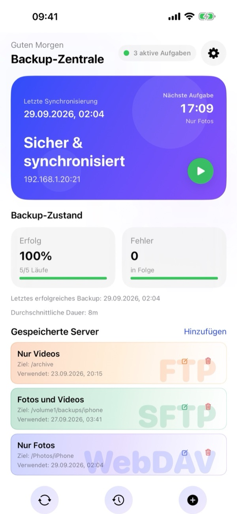
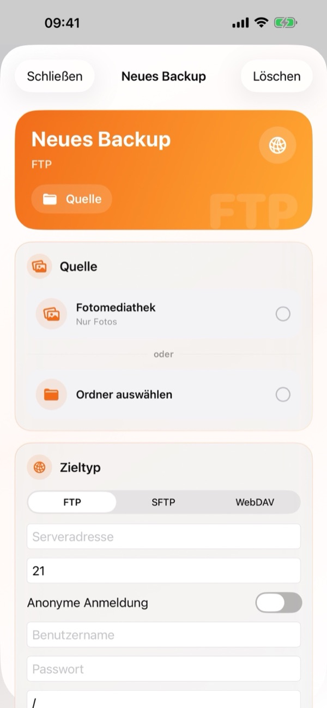
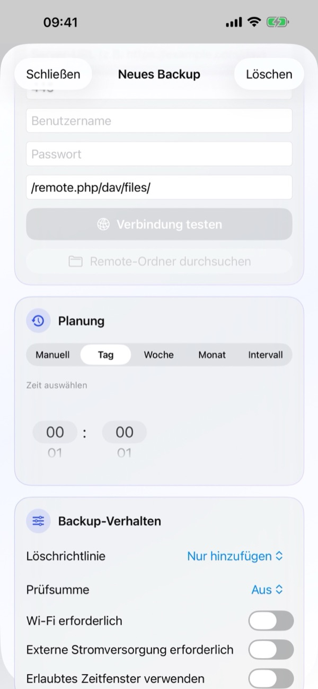
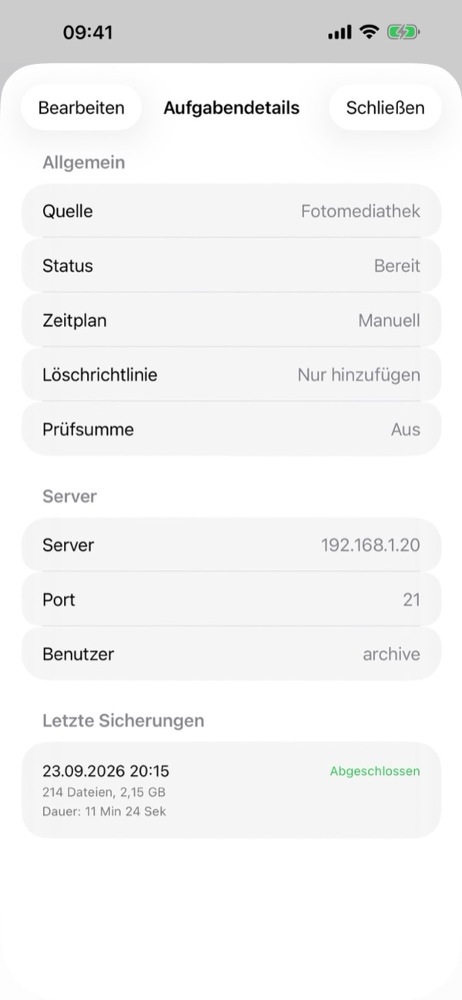
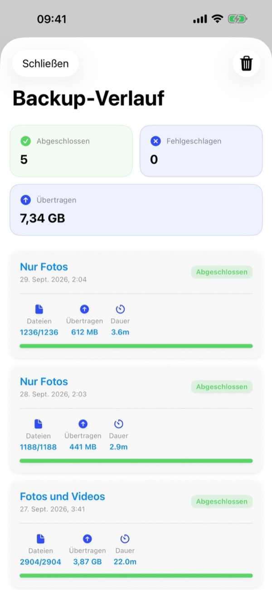
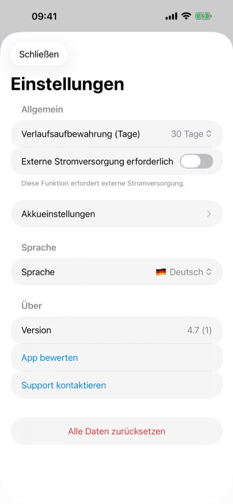

1. Was Sie brauchen
- Einen kompatiblen Server: Ein NAS (Synology, QNAP, TrueNAS, Unraid), Heimserver oder eine persönliche Cloud (Nextcloud, ownCloud, WebDAV), die FTP, SFTP (SSH) oder WebDAV (HTTP/HTTPS) unterstützt.
- Zugangsdaten: Serveradresse (IP, Hostname oder WebDAV-URL), Port (Standard: FTP 21, SFTP 22, WebDAV 443/80) sowie Benutzername und Passwort (oder Anonyme Anmeldung für FTP).
- iOS-Berechtigungen: Voller Zugriff auf Ihre Fotos, Lokales Netzwerk (für Server im Heimnetz) und Mitteilungen für Hintergrund-Backups.
2. Übersicht der Backup-Zentrale
Beim Öffnen von BackupFlow zeigt Ihnen die Backup-Zentrale alle wichtigen Statusinformationen auf einen Blick:
- Status-Banner: Zeigt Letzte Synchronisierung, die Nächste Aufgabe mit Uhrzeit, den Status (Sicher & synchronisiert), die Serveradresse und den grünen Start-Button (▶) zum sofortigen Starten eines Backups.
- Backup-Zustand: Zeigt Ihre Erfolg-Quote (Prozent und Läufe), aufeinanderfolgende Fehler, das letzte erfolgreiche Backup und die Durchschnittliche Dauer.
- Gespeicherte Server: Übersichtskarten für alle FTP-, SFTP- und WebDAV-Aufgaben mit Zielpfad sowie Schnellaktionen zum Bearbeiten (✏️) und Löschen (🗑️). Tippen Sie auf eine Karte, um die Aufgabendetails zu öffnen.
- Untere Leiste & Einstellungen: Über die drei Symbole unten starten Sie die Synchronisierung (🔄), öffnen den Backup-Verlauf (🕒) oder erstellen über + ein Neues Backup. Das Zahnrad-Symbol (⚙️) oben rechts öffnet die Einstellungen.

3. Neues Backup erstellen
Tippen Sie in der Backup-Zentrale unten auf + oder neben Gespeicherte Server auf Hinzufügen, um Neues Backup zu öffnen:
- Quelle: Wählen Sie Fotomediathek (Nur Fotos, Nur Videos oder Fotos und Videos) oder tippen Sie auf Ordner auswählen, um einen Ordner aus der iOS-App „Dateien“ zu sichern.
- Zieltyp: Wählen Sie FTP, SFTP oder WebDAV. Geben Sie Serveradresse, Port, Benutzername und Passwort (bzw. Anonyme Anmeldung bei FTP) sowie den Zielpfad (z. B.
/remote.php/dav/files/) ein. Prüfen Sie die Eingaben mit Verbindung testen und wählen Sie den Zielordner optional über Remote-Ordner durchsuchen aus. - Planung: Wählen Sie Manuell, Tag, Woche, Monat oder Intervall und legen Sie unter Zeit auswählen die Uhrzeit fest.
- Backup-Verhalten: Konfigurieren Sie Löschrichtlinie, Prüfsumme und Ausführungsbedingungen und speichern Sie die Aufgabe.
Nach dem ersten vollständigen Backup überträgt BackupFlow nur noch neue oder geänderte Dateien, sodass Folge-Backups deutlich schneller abgeschlossen sind.


4. Aufgabendetails & Verwaltung
Tippen Sie unter Gespeicherte Server auf eine Aufgabe, um die Aufgabendetails einzusehen:
- Allgemein: Zeigt Quelle, Status (z. B. Bereit), Zeitplan, Löschrichtlinie und Prüfsumme.
- Server: Zeigt Server, Port und Benutzer.
- Letzte Sicherungen: Listet die letzten Durchläufe dieser Aufgabe samt Dateianzahl, Datenmenge und Dauer auf.
- Über Bearbeiten oben links passen Sie die Aufgabe jederzeit an.

5. Planung & Bedingungen
Unter Planung wählen Sie das Ausführungsintervall: Manuell, Tag, Woche, Monat oder Intervall (mit Uhrzeit unter Zeit auswählen).
Unter Backup-Verhalten legen Sie fest, unter welchen Bedingungen automatische Backups starten dürfen:
- Wi-Fi erforderlich: Verhindert die Nutzung mobiler Daten.
- Externe Stromversorgung erforderlich: Läuft nur, während das iPhone geladen wird.
- Erlaubtes Zeitfenster verwenden: Beschränkt automatische Backups auf bestimmte Uhrzeiten (z. B. nachts).
- Minimaler Akkustand (unter Einstellungen › Akkueinstellungen): Überspringt Backups bei niedrigem Akkustand.
6. Löschrichtlinie, Prüfsumme & iCloud
Unter Backup-Verhalten bestimmen Sie den Umgang mit gelöschten Dateien und die Dateiüberprüfung:
- Löschrichtlinie › Nur hinzufügen
- Auf dem Server wird niemals etwas gelöscht. Empfohlen, wenn Sie nach dem Backup Fotos auf dem iPhone löschen möchten, um Speicherplatz freizugeben.
- Löschrichtlinie › Spiegeln
- Der Zielordner bleibt ein exaktes Abbild der Quelle. Auf dem iPhone gelöschte Dateien werden beim nächsten Lauf auch auf dem Server entfernt.
- Löschrichtlinie › Löschen archivieren
- Entfernte Dateien werden nicht gelöscht, sondern auf dem Server in einen datierten Ordner .backupflow_archive verschoben.
- Prüfsumme
- Prüft nach dem Upload die Dateiintegrität auf dem Server (standardmäßig Aus für maximale Geschwindigkeit).
Tipp für iCloud-Fotos: Aktivieren Sie iCloud-Objekte bei Bedarf laden, damit auch Fotos und Videos gesichert werden, deren Originale nur in iCloud gespeichert sind.
7. Backups im Hintergrund
BackupFlow nutzt den iOS BGTaskScheduler für geplante Hintergrund-Backups. Da iOS den genauen Ausführungszeitpunkt anhand von Akkustand und Gerätenutzung steuert, kann ein geplantes Backup kurz nach der gewählten Uhrzeit starten oder eine Mitteilung senden.
Wird ein Backup durch iOS unterbrochen, setzt BackupFlow es beim nächsten Öffnen nahtlos fort und überspringt bereits übertragene Dateien. Halten Sie das iPhone beim ersten großen Backup im WLAN und am Ladegerät.
8. Backup-Verlauf
Tippen Sie in der unteren Leiste der Backup-Zentrale auf das mittlere Verlauf-Symbol (🕒), um den Backup-Verlauf zu öffnen:
- Übersichtskarten: Zeigt die Anzahl für Abgeschlossen, Fehlgeschlagen sowie das gesamte Übertragen-Datenvolumen (GB/MB).
- Verlaufsdetails: Jeder Eintrag zeigt Aufgabenname, Zeitstempel, Status, Dateien (z. B.
1236/1236), übertragene Größe und Dauer. Mit dem Papierkorb-Symbol (🗑️) oben rechts löschen Sie den Verlauf.

9. Einstellungen
Über das Zahnrad-Symbol (⚙️) oben rechts in der Backup-Zentrale öffnen Sie die Einstellungen:
- Verlaufsaufbewahrung (Tage): Speicherdauer des Verlaufs (z. B. 30 Tage).
- Externe Stromversorgung erforderlich & Akkueinstellungen: Globale Strom- und Akkuschwellenwerte.
- Sprache: Wechseln Sie die App-Sprache direkt zwischen allen 12 unterstützten Sprachen.
- Über: Zeigt die Version, App bewerten und Support kontaktieren.
- Alle Daten zurücksetzen: Entfernt alle Aufgaben, Verläufe und gespeicherten Passwörter vom iPhone (Dateien auf Ihren Servern bleiben unberührt).

10. Problemlösung
- Verbindung zum Server schlägt fehl.
- Prüfen Sie Adresse, Port (FTP 21, SFTP 22, WebDAV 443/80), Benutzername und Passwort. Stellen Sie bei Heimservern sicher, dass das iPhone im selben WLAN ist und unter iPhone-Einstellungen › Datenschutz & Sicherheit › Lokales Netzwerk der Zugriff für BackupFlow aktiviert ist.
- Ein geplantes Backup wurde nicht ausgeführt.
- Prüfen Sie die Bedingungen unter Backup-Verhalten (WLAN, Strom, Zeitfenster), die Akkueinstellungen sowie die Mitteilungsberechtigung.
- Einige Fotos fehlen.
- Aktivieren Sie den vollen Fotomediathek-Zugriff und schalten Sie iCloud-Objekte bei Bedarf laden ein.
- Dateien wurden auf dem Server gelöscht.
- Ändern Sie die Löschrichtlinie der Aufgabe von Spiegeln auf Nur hinzufügen oder Löschen archivieren.
- SFTP-Sicherheitswarnung erscheint.
- Der SSH-Fingerabdruck des Servers hat sich geändert. Das ist nach einer Neuinstallation normal; fragen Sie andernfalls Ihren Administrator.
11. Datenschutz & Sicherheit
Ihre Dateien werden direkt vom iPhone auf Ihren eigenen Server übertragen. BackupFlow betreibt keine eigenen Server, sieht Ihre Dateien nie und sammelt keinerlei Nutzungs- oder Analysedaten. Passwörter werden sicher im iOS-Schlüsselbund (Keychain) gespeichert. Weitere Details finden Sie in unserer Datenschutzrichtlinie.
12. Brauchen Sie Hilfe?
Tippen Sie in der App auf Einstellungen › Support kontaktieren oder schreiben Sie an tamersavasci@icloud.com. App-Version und Gerätemodell werden automatisch angehängt.